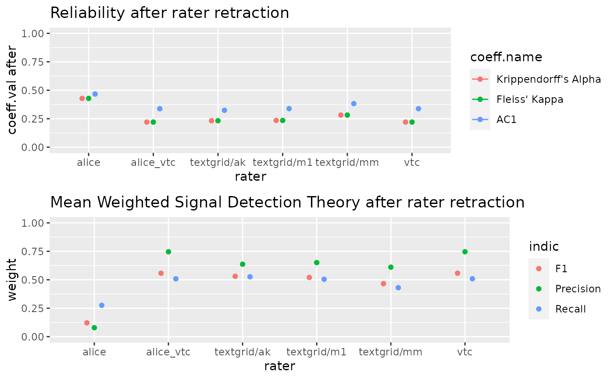

Provide indication of quality for each annotator. Following classical test theory, each annotator is removed from the data and a reliability indicator is provided for the annotation as a whole. Removing a good annotator should decrease the indicator. Additionally, a mean of precision, recall and F-score are provided by rater.
compare.rating(raterData)
| raterData | : a raterData class |
|---|
Soon
library(ChildRecordsR) path = "/mnt/94707AA4707A8CAC/CNRS/corpus/namibia-data/" CR = ChildRecordings(path)#> ############################################### #> Hello Wellcome to the ChildRecordings R Project #> #> Your ChildRecording project path contained : #> 3619 annotations files #> 1559 are referenced in the metadata #> 7 coders were found : textgrid/m1 alice_vtc vtc alice textgrid/ak textgrid/mm textgrid/ac #> #> 42 file(s) seem(s) to be unreferenced in the metadata #> more infos in ChildRecordings$integrity_test$files.unreferenced #> #> 427 metadata don't have a start recording time (a.k.a start.time) #> therefore time indicators will not be built for those files #> more infos in ChildRecordings$integrity_test$missing.start.time #> 362 files are empty #> This should normally mean that no annotation were provided by annotator #> more infos in ChildRecordings$integrity_test$empty.files# if no time windows is specified, this function will only return at table for all the know raters # All the rater need to ratter any segment find search = find.rating.segment(CR, "aiku/namibie_aiku_20160715_1.wav") rez = aggregate.rating(search, CR, cut=0.100, verbose=T)#> |============ | 17% time by step : 0s estimate duration : 0m remain : 0m #> |========================= | 33% time by step : 0s estimate duration : 0m remain : 0m #> |===================================== | 50% time by step : 0s estimate duration : 0m remain : 0m #> |================================================= | 67% time by step : 0s estimate duration : 0m remain : 0m #> |============================================================== | 83% time by step : 0s estimate duration : 0m remain : 0m #> |==========================================================================|100% time by step : 0s estimate duration : 0m remain : 0m #> number of annotators 6 #> length of recording annotation for each annotator 60000 ms or 0.01666667 hours #>comparaison = compare.rating(rez)#> number of annotators 6 #> length of reccording annotation 360000 seconds or 100 hours #> Record span 60000 seconds or 16.66667 hours #> #> ### Annotator alice ### #> #> coeff.val before conf.int before coeff.val after #> Krippendorff's Alpha 0.276 (0.275,0.276) 0.428 #> Fleiss' Kappa 0.276 (0.275,0.276) 0.428 #> AC1 0.364 (0.363,0.365) 0.467 #> conf.int after coeff.difference #> Krippendorff's Alpha (0.428,0.429) -0.153 #> Fleiss' Kappa (0.428,0.429) -0.153 #> AC1 (0.466,0.468) -0.103 #> #> unweight weight #> Recall 0.167 0.275 #> Precision 0.046 0.079 #> F1 0.072 0.122 #> #> ### Annotator alice_vtc ### #> #> coeff.val before conf.int before coeff.val after #> Krippendorff's Alpha 0.276 (0.275,0.276) 0.220 #> Fleiss' Kappa 0.276 (0.275,0.276) 0.220 #> AC1 0.364 (0.363,0.365) 0.338 #> conf.int after coeff.difference #> Krippendorff's Alpha (0.22,0.221) 0.055 #> Fleiss' Kappa (0.22,0.221) 0.055 #> AC1 (0.337,0.339) 0.026 #> #> unweight weight #> Recall 0.471 0.509 #> Precision 0.502 0.746 #> F1 0.454 0.558 #> #> ### Annotator textgrid/ak ### #> #> coeff.val before conf.int before coeff.val after #> Krippendorff's Alpha 0.276 (0.275,0.276) 0.232 #> Fleiss' Kappa 0.276 (0.275,0.276) 0.232 #> AC1 0.364 (0.363,0.365) 0.324 #> conf.int after coeff.difference #> Krippendorff's Alpha (0.232,0.233) 0.043 #> Fleiss' Kappa (0.232,0.233) 0.043 #> AC1 (0.323,0.325) 0.040 #> #> unweight weight #> Recall 0.411 0.526 #> Precision 0.443 0.637 #> F1 0.399 0.531 #> #> ### Annotator textgrid/m1 ### #> #> coeff.val before conf.int before coeff.val after #> Krippendorff's Alpha 0.276 (0.275,0.276) 0.235 #> Fleiss' Kappa 0.276 (0.275,0.276) 0.235 #> AC1 0.364 (0.363,0.365) 0.339 #> conf.int after coeff.difference #> Krippendorff's Alpha (0.234,0.236) 0.041 #> Fleiss' Kappa (0.234,0.236) 0.041 #> AC1 (0.338,0.34) 0.025 #> #> unweight weight #> Recall 0.474 0.504 #> Precision 0.454 0.651 #> F1 0.430 0.520 #> #> ### Annotator textgrid/mm ### #> #> coeff.val before conf.int before coeff.val after #> Krippendorff's Alpha 0.276 (0.275,0.276) 0.282 #> Fleiss' Kappa 0.276 (0.275,0.276) 0.282 #> AC1 0.364 (0.363,0.365) 0.383 #> conf.int after coeff.difference #> Krippendorff's Alpha (0.281,0.283) -0.006 #> Fleiss' Kappa (0.281,0.283) -0.006 #> AC1 (0.382,0.384) -0.019 #> #> unweight weight #> Recall 0.327 0.430 #> Precision 0.375 0.611 #> F1 0.329 0.466 #> #> ### Annotator vtc ### #> #> coeff.val before conf.int before coeff.val after #> Krippendorff's Alpha 0.276 (0.275,0.276) 0.220 #> Fleiss' Kappa 0.276 (0.275,0.276) 0.220 #> AC1 0.364 (0.363,0.365) 0.338 #> conf.int after coeff.difference #> Krippendorff's Alpha (0.22,0.221) 0.055 #> Fleiss' Kappa (0.22,0.221) 0.055 #> AC1 (0.337,0.339) 0.026 #> #> unweight weight #> Recall 0.471 0.509 #> Precision 0.502 0.746 #> F1 0.454 0.558 #>